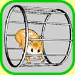

What, it's Wednesday already? Sorry, but our fine staff of Deep Magic writers is deep in the midst of other magic-making at the moment. But take heart; their incantations are sure to enhance your future enjoyment of the go2net site and the MetaCrawler. Besides, your Hamachi is a goner by now - go clone another one.
|  |
| Try to keep up with your new pet |
The Tamagotchi craze is sweeping across the nation. In a quiet ground swell all over the world, programmers are delving deeply into the care, feeding and development of virtual pets. I am, of course, no exception. My virtual-pet experiences began in the early 1980s with a program called "House-on-a-Disk." I have since experienced the joys of Dogz, Catz, and a host of other electronic beings. It's surprisingly entertaining to welcome another creature into your computer, and undoubtedly a broadening experience to share your monitor's real estate with someone (or something) else. My recent experiences with a real-world Tamagotchi prompted me to create my own fuzzy, lovable virtual pet, which I hereby dub Hamachi1.
Any similarities between the Java toy enclosed in this article and another fashionable, much-sought-after, plastic-based virtual pet are hereby declared to be purely coincidental. Although I bear the brunt of the responsibility for said implementation, I will tell anyone willing to listen that the actual coding was done by a group of approximately 100 monkeys.
Once the supply of bananas was exhausted, the room was unlocked and the software was declared finished. If you feel your rights have been infringed upon in some way, don't sue me; sue the monkeys. |
Hamachi, the Wonder Hamster
And now, the main attraction; the Hamachi Java applet. The
virtual pet living within is an unusual hamster-like creature. As anyone
who
has ever owned a hamster knows, a hamster's only goal in life is to
escape from its cage. The hamster-derivative I have captured for your
enjoyment is content to reside in the applet as long as its needs are
satisfied. If, however, it becomes restless or unhappy with your
care-taking efforts, it will likely chew its way out of the cage and
venture forth into the harsh, cruel world.
|
| Figure 1 |
Figure 1 shows the expected growth chart for your Hamachi. Unlike some virtual pets, this one remains true to the biological and genetic
If, however, it becomes restless or unhappy with your care-taking efforts, it will likely chew its way out of the cage and venture forth into the harsh, cruel world. |
Maintain your Hamachi's well-being and you will see it develop from a wee thing into a full-fledged furry companion. One day in our world is equivalent to a month of the hamster's time. If you care well for your hamster, it can live more than 20 "months"2.
 |
| Figure 2 |
The user-interface for Hamachi is simple. As seen in Figure 2, the three purple buttons are used to select and perform all available actions. In most situations, the "A" button will highlight the action you wish to perform, the "B" button will perform the highlighted action, and the "C" button will attempt to cancel the currently executing action. If no action is highlighted and the "B" button is pressed, a digital clock will be displayed. Yes, the Hamachi can double as a timepiece! Will wonders never cease?
There are six small action icons in the Hamachi display, again seen in Figure 2. Although they are fairly self-explanatory, brief explanations are as follows:
The hamster is a hardy, robust pet; and hence it can survive a goodly amount of experimental or accidental clicking. Go forth and enjoy!
For those impatient souls who would rather not endure a real-world 20-day wait to discover the entirety of the joy that is Hamachi, there is a drastically more rapidly-evolving Hamachi applet as well. Note that you must also care for this Hamachi at an increased rate so as to compensate for its rapid development. If you download the source code to the applet, you can specify the execution rate by changing the
An alpaca-based virtual pet, for instance, might have a "Rocketry" action that would allow it to launch software engineers high into the atmosphere, only to watch them come plummeting down to Earth once more. |
the making of Hamachi
My implementation is based on rigorous research into
the lifestyle and habits of real-world hamsters. I have also incorporated
some experiences with my previous pet hamster, Tatanka3. Indeed,
Hamachi's likeness is patterned after Tatanka's, although the limited
resolution of Hamachi's imitation LCD loses some detail.
I've avoided touting Java's abilities thus far, but a brief digression on the benefits of virtual-pet implementation in Java seems a necessity. Java's cross-platform nature allows developers to target the widest possible audience of pet-owners. Furthermore, embedding applets in web pages makes it easy to dispense Java-based pets to all your friends; just mail them the URL. Multiple pets may even be instantiated in separate browser (or appletviewer) windows. Just try that with a real-world pet!
Having implemented one virtual pet, I now feel prepared to suffer through the second-system effect. Hamachi is lacking some niceties present in other pets; i.e., illness, punishment facilities, and behavioral modification. Higher-quality graphics, sound, and new animal-species implementations are some other excellent future development directions. An alpaca-based virtual pet, for instance, might have a "Rocketry" action that would allow it to launch software engineers high into the atmosphere, only to watch them come plummeting down to Earth once more. Rollicking-good, clean fun awaits us all, if we can only find time to bring our imaginative creations to light.
Hamachi is virtually living proof4 that Java-based pets can be
friendly, manageable and well-behaved. As JavaSoft would have it, we
may eventually see pets like this one popping up in cellular
telephones, toasters, and even on dog collars. Regardless of the locale, such
model citizens of cyberspace are sure to be loved by all, so get one while
the getting's good!

-- Walter <shaper@cerf.net> still believes
in keeping everything sheep-shape.